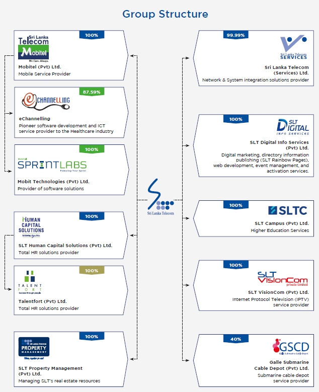
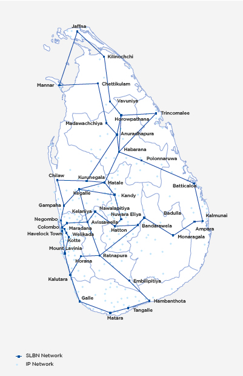
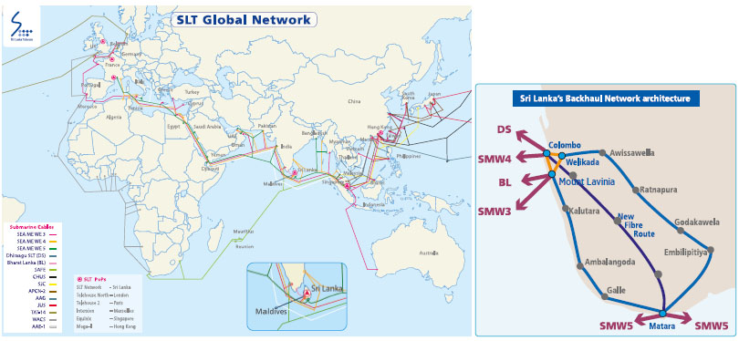
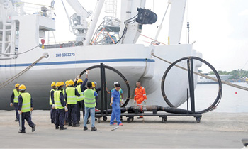
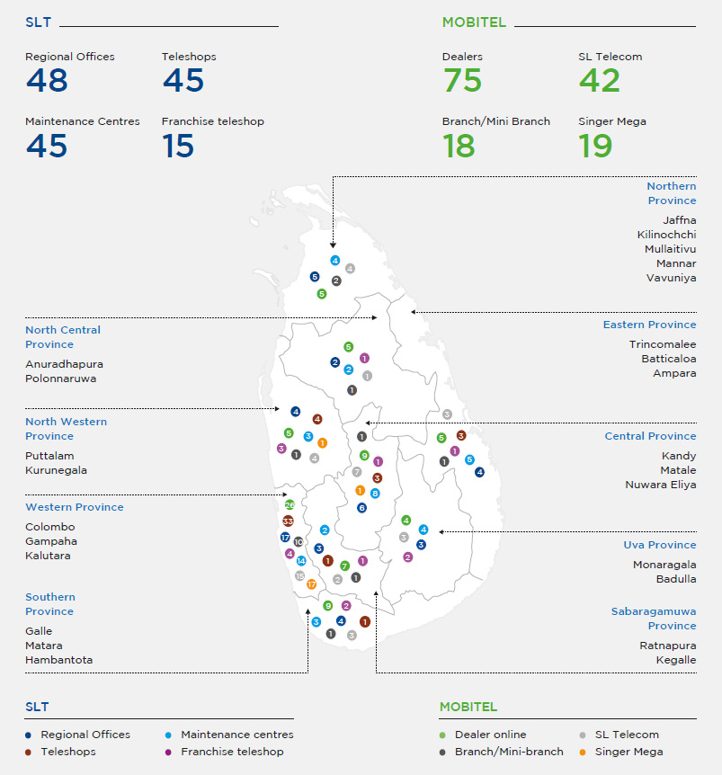

About SLT


Sri Lanka Telecom PLC is the national Information and Communications Technology (ICT) solutions provider and the leading broadband and backbone infrastructure services provider in Sri Lanka for over 162 years. SLT enables opportunities that empower Sri Lankans and elevates the country’s standing in the global arena. SLT’s transformation into a digital service provider has seen the Company move beyond telecommunications services to provide a variety of services and solutions that cater to a digital lifestyle.


Principal lines of business
The Sri Lanka Telecom Group provides diversified services and an entire range of ICT solutions that cover fixed and mobile telephony, broadband, data services, Internet Protocol Television (IPTV), cloud computing and hosting services, and networking solutions to its varied customers via the latest technologies.
The SLT Group primarily focuses on three operating segments which are the Group’s strategic segments:
- Fixed ICT operations
- Mobile ICT operations
- Other segment operations
Fixed and mobile ICT operations constitute the SLT Group’s core business. In 2019, they collectively accounted for 98% of revenue, 98% of total assets, and nearly 100% of capital expenditure of the SLT Group.
Secondary lines of business
As SLT transforms into a digital service provider, the Group has expanded beyond ICT services to deliver products and services that utilise its core strengths, expertise, and assets. Through its subsidiaries, the SLT Group offers the following services:
- IPTV services and content creation facilities
- Human Resources solutions
- ICT infrastructure and system integrator solutions
- Directory services
- Digital marketing solutions
- Tertiary educational services
- Healthcare channelling platform
- Property management
- Submarine cable maintenance
In addition to diversifying the Group’s revenue streams and portfolio, the Group also seeks to build up the core competencies of Sri Lanka and the Sri Lankan people, and to build the image of the country as a global player in the telecommunications industry.
Products and markets
Fixed ICT operations
The Group’s holding company, SLT, operates in the fixed ICT business. It provides telecom networks and ICT services to organisations of all sizes across all economic sectors, other telecommunications operators and internet service providers (ISPs), public sector institutions, and domestic customers.
ICT facilities and services provided include voice, data, broadband, wholesale, enterprise, cloud, international, and IPTV. One of the SLT Group’s key strategic objectives is to drive adoption of broadband-based consumer and enterprise services by expanding the broadband footprint through the Next Generation Network (NGN) and National Backbone Network (NBN). These efforts are supplemented by an array of technologies including optical fibre, ADSL2+, VDSL2, carrier-grade Wi-Fi, and both fixed and mobile 4G LTE technologies. The Company also uses its multiple international submarine cable networks to offer state-of-the-art global services, securing its position as a key global player in the telecom industry.
Mobile ICT operations
Mobitel (Pvt) Ltd. (“Mobitel”), a fully-owned subsidiary of SLT, offers mobile ICT services including mobile telephony services, high-speed broadband, enterprise solutions, international services, and a range of value-added services. Mobitel has been the pioneer in South Asia:
- To launch a Super 3.5G HSPA network
- To successfully demonstrate HSPA+ MIMO (Multiple Input Multiple Output) technology
- To successfully trial 4.5G LTE-Advanced Pro technology
- To launch the first commercial 4.5G/
4G+ mobile network - To successfully trial the first 5G network, achieving a new speed record of 1.55 Gbps
- To complete the first 5G voice call
- To be recognised as the first mobile 5G network on the Ookla 5G map
Mobitel’s coverage extends nationwide and includes international roaming with the partnership of a global web of over 650 networks.
As the only 4.5G/4G+ mobile network in Sri Lanka, Mobitel offers an unparalleled broadband network experience delivering burst speeds up to 300 Mbps and has been recognised by Ookla Speedtest Awards as the fastest mobile network in Sri Lanka.
Mobitel was the first mobile network operator to deploy a Sub-1G mobile broadband network utilising 850 MHz spectrum in Sri Lanka, increasing 4G LTE coverage across the island. In 2018, Mobitel commenced rolling out its largest ever 4G LTE expansion project with over 1,600 LTE sites across the nation together with Voice over LTE (VoLTE), enabling customers to make high quality voice calls over the LTE network.
Taking another innovative step towards the digital transformation, Mobitel provided a state-of-the-art LTE Critical Communications solution to a leading container terminal operator for the first time in Sri Lanka.
With the deployment of the advanced Remote SIM Provisioning platform, Mobitel now connects all new smart devices with embedded SIMs, such as Apple iPhones and smartwatches, to facilitate the growth of new generation devices.
Currently, 62% of Mobitel’s sites are connected with superfast fibre, making Mobitel the largest fibre connected mobile network in Sri Lanka, delivering an unparalleled mobile broadband experience to our customers.
With the launch of South Asia’s first NB-IoT network in the 850/900 MHz spectrum, Mobitel is now capable of delivering coverage with increased penetration, enabling use by sensors embedded deep within concrete structures or underground such as those required for smart meters, disaster monitoring sensors, and car park sensors. Moreover, Mobitel has demonstrated the use of NB-IoT as a powerful technology in urban farming and home safety systems.
Mobitel is the pioneer in 5G in Sri Lanka and South Asia, having publicly demonstrated the first 5G Massive MIMO deployment over 3.5 GHz spectrum. In 2019, Mobitel successfully showcased South Asia’s first 5G deployment over a mobile network, hot on the heels of the 5G deployments in the USA and South Korea, connecting a commercial 5G mobile smartphone to its 5G network. Mobitel went on to achieve a new speed record of 1.55 Gbps for South Asia, a landmark for 5G deployment across the globe.
Our reach
The SLT Group covers the whole country and serves a customer base of over seven million accounts across fixed and mobile ICT services. Our customers include domestic users, small and medium enterprises (SMEs), retail customers, multinationals and enterprises, public sector institutions, as well as other operators and wholesale customers.
Our fibre optic network, with broadband speeds of up to 1 Gbps, extends nearly 50,000 kms across the island.
Network connectivity
SLT has laid out nearly 50,000 kms of optical fibre throughout the island to extend fibre access through FTTH technology. With the implementation of FTTH network, SLT’s 57,000 kms length of legacy access network of copper cables valued over LKR 6 Bn. will be monetised in the future, while being replaced by fiber technology.
Over 300 nodes connected throughout the country accumulate all traffic from various points in the island, giving us the ability to route data to its destination within milliseconds. The core transmission network is equally built with an
ultra-high-speed capacity and
cutting-edge routers.
Our mobile network connects over 7.7 million subscribers across Sri Lanka with voice and broadband wireless services. Mobile subscribers can connect via GSM/EDGE (2G/2.5G), UMTS/HSPA/HSPA+/DC-HSPA+ (3G/3.5G/3.75G), LTE/LTE-Advanced (4G/4.5G) technologies through Mobitel.

National Backbone Network
Our advanced fibre optic-based nation-wide telecommunication main backbone network is built on 100G technology, 300 nodes, and 64 SLBN nodes which are always functioning due to comprehensive protection schemes such as Automatically Switched Optical Network (ASON) and a comprehensive 1+2 redundancy system. Our high-quality network is one that features a high speed of 8 Tbps combined with extremely low latency, and is a veritable asset in the country’s development.
SLT’s IP network provides intelligent IP transport services for various platforms which are related to delivering SLT’s retail products (broadband, PeoTV, 4G, and Wi-Fi) and connecting government, enterprise, and network carriers. It is also connected to international carriers with multiple back-up paths to provide global connectivity for businesses. It is comprised of 100Gbps backbone, metro rings, and multiple access rings consisting of over 500 high-capacity nodes and over 3,000 service segregation nodes, making it the largest network in the island. The NBN aims to facilitate to the country’s ICT development plans with the future needs of all ICT operators in the country.
South Asia’s first submarine cable depot in Galle
Galle Submarine Cable Depot Private Limited is a joint venture formed with Indian Ocean Cableship Private Limited (IOCPL) and Sri Lanka Telecom (SLT) to operate South Asia’s first Submarine Cable Depot in Galle dedicated for providing submarine cable spare storage facilities for regional telecom operators under the South East Asia Indian Ocean Cable Maintenance Agreement (SEAIOCMA) zone. The Submarine Cable Depot commenced operations in January 2019.

Global connectivity
SLT connects Sri Lanka to the world through five international submarine cable systems: SEA-ME-WE 3, SEA-ME-WE 4, SEA-ME-WE 5, Bharat-Lanka, and the Dhiraagu-SLT system. SLT is a key member of the SEA-ME-WE 5 cable consortium with a full cable landing station at Matara with a capacity to connect to the East and West cable segments at 24 Tbps each. Our joint venture with Singapore-based Indian Ocean Cableship Private Limited, Galle Submarine Cable Depot Private Limited, handles submarine cable maintenance for the region, reducing service restoration times and rendering SLT a key global player in the telecom industry.

Market presence
SLT has Teleshops and regional telecommunication offices across the island in central locations within convenient reach of customers, where they can avail of our services and products. In 2019, SLT opened new Teleshops and will continue to expand to more small and developing townships, expanding SLT’s reach and increasing customer convenience. Furthermore, through an extensive dealer and reseller network across the island, customers can easily purchase recharge cards and register for broadband and LTE services. Customers can pay their bills online and at most major banking institutions, supermarkets, and selected retail outlets.
